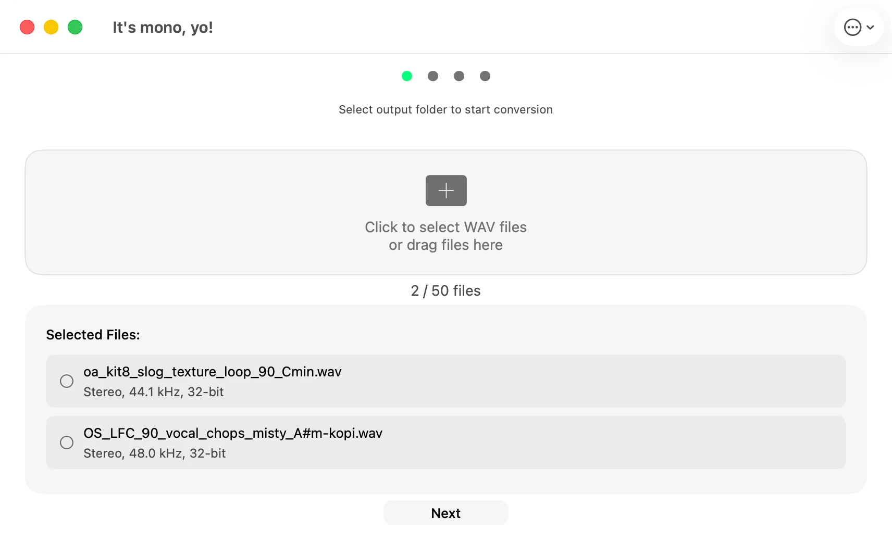

It's mono, yo!
Mono that keeps the whole sound.
A small Mac app that batch converts stereo WAV and AIFF to mono for hardware samplers like the Elektron Digitakt, Roland SP-404 and Erica Synths Sample Drum.

See It in Action
A clean, native macOS experience built for speed and simplicity


Output Control
Choose 16-bit, 24-bit, or 32-bit float output
AIFF Support
Import and export WAV or AIFF files
No Limits
No file size or batch limits
Sample Rate
Resample to 44.1, 48, or 96 kHz
What users are saying
From the Mac App Store
Simple and to the point
"Love it — it's simple and straight forward. Amazing for my Sample Drum."
Cheap and it works!
"$.99 to save me a bunch of time for folks that use Logic and don't know how to export mono files! GREAT!"
Powerful Features for Audio Conversion
Everything you need to convert your stereo audio files to mono format efficiently
Drag & Drop
Simply drag your WAV or AIFF files directly into the app
Modern Theme
IAMJARL Design System with light & dark mode
Batch Processing
Convert unlimited files with real-time progress tracking
Keyboard Shortcuts
Quick access with ⌘O and ESC shortcuts
Perfect for Hardware Samplers and Music Production
Designed specifically for music producers, hardware enthusiasts, and eurorack modular synth users
Specifically designed for preparing samples for hardware like the Erica Synths Sample Drum module and other equipment that requires mono files.
System Requirements
-
macOS 12.0 or later
-
64-bit processor
-
WAV and AIFF file format support
Guides & Resources
Learn how to prepare samples for your hardware sampler
Convert Stereo WAV to Mono on Mac
Step-by-step guide to converting your WAV files.
Why Hardware Samplers Need Mono
The technical reasons behind the mono requirement.
Erica Synths Sample Drum
Prepare samples for this Eurorack drum module.
Elektron Digitakt
Optimize +Drive space and transfer speed.
Roland SP-404
Double your polyphony and sample lengths.
Eurorack Samplers
Sample preparation for modular sampler modules.
Batch Convert WAV Files
Convert unlimited files at once with progress tracking.
Elektron Octatrack
Optimize Flash storage and Flex Machine RAM.
Elektron Model:Samples
Convert stereo to mono properly for this mono-only device.
Polyend Tracker
Prep stereo samples for this mono-only tracker groovebox.
Akai MPC
When to use mono on the MPC One, Live, X, and Key.
Frequently Asked Questions
How do I convert stereo WAV files to mono on Mac?
Download It's mono, yo! from the Mac App Store, then drag and drop your WAV or AIFF files into the app or use ⌘O to select files. Choose an output folder, pick your preferred bit depth (16-bit, 24-bit, or 32-bit float) and output format (WAV or AIFF), then convert.
Does it preserve the original sample rate?
By default, yes. The app preserves the original sample rate of your files. You can also choose to resample to 44.1 kHz, 48 kHz, or 96 kHz, and you have full control over the output bit depth: 16-bit (default), 24-bit, or 32-bit float.
Can I convert multiple files at once?
Yes. There are no file limits — convert as many files as you need. The app processes them with real-time progress tracking for each file, with automatic overwrite protection.
Does it work with Hardware Samplers like Erica Synths, Elektron Digitakt, or Roland SP-404?
Yes. It's mono, yo! is built for preparing WAV samples for the Erica Synths Sample Drum, Elektron Digitakt (which natively uses 48kHz mono files), and Roland SP-404 models (where converting kicks to mono doubles your polyphony to 32 voices).
What is the best Mac app to batch convert WAV to mono?
It's mono, yo! is a native macOS tool built for this specific task: it uses the ITU-R BS.775 algorithm for downmixing, tracks real-time progress, has zero file limits, and integrates directly with Finder without requiring bulky DAW software.
How much does it cost?
It's mono, yo! is available on the Mac App Store for a small one-time purchase. No ads, no in-app purchases, no subscriptions.